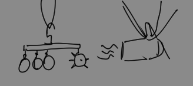
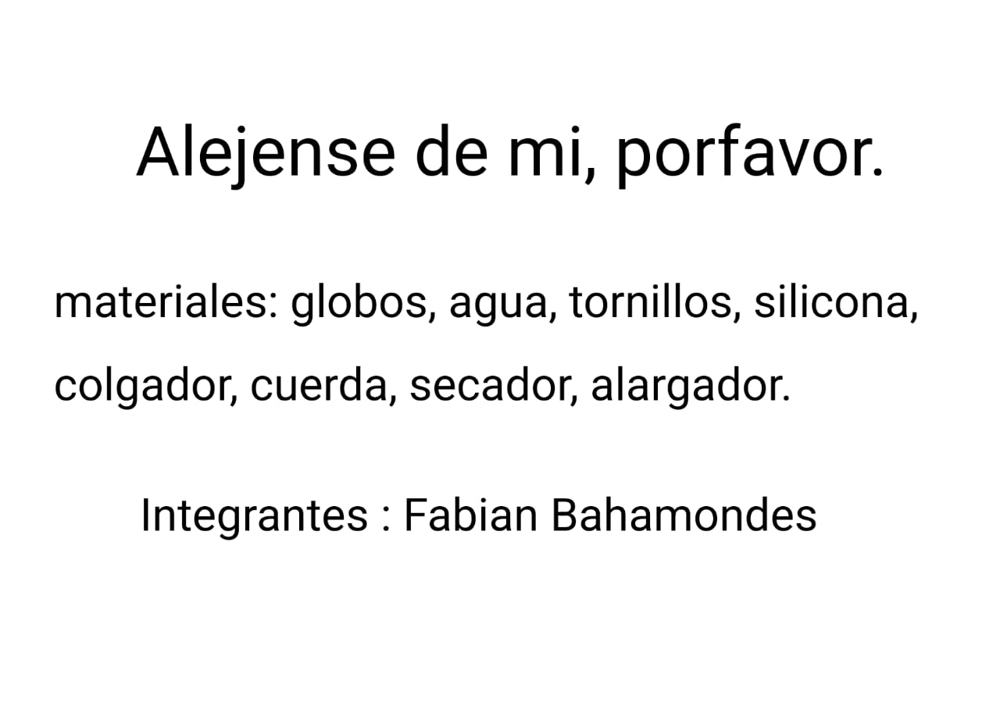

El trabajo utiliza un colgador para sostener unos globos con agua y un globo con tornillos, los globos representan personas y el "protagonista" seria
El globo con tornillos, que quiere que los demas globos se alejen de el porque siente que los reventara si se acercan demasiado, pero eso nunca sucede
los globos no se revientan al tacto de el y el secador representa como la vida sigue moviendose, que apesar de que el quiera o no
 